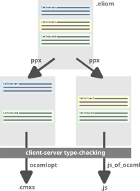
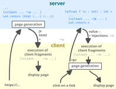

Client-server application programming guide
This tutorial has been tested with Eliom 11.0.0.
This page describes the main concepts you need to master to become fully operational with Ocsigen. Use it as your training plan or as a cheat sheet while programming.
Depending on your needs, you may not need to learn all this. Ocsigen is very flexible and can be used both for Web site programming (see this page) or more complex client-server Web apps and their mobile counterparts.
In parallel to the reading of that page, we recommend to generate your first Ocsigen Start app to see running examples of all these concepts (see that page).
Too long; didn't read? Get your first app running in 3 minutes:
opam install ocsigen-start eliom-distillery -name myapp -template os.pgocaml cd myapp make db-init && make db-create && make db-schema make test.byte
Then open http://localhost:8080.
Requires postgresql and sass (or sassc). Read the detailed instructions if needed.
OCaml
This programming guide assumes you know the OCaml language. Many resources and books are available online.
Lwt
Lwt is a concurrent programming library for OCaml, initially written by Jérôme Vouillon in 2001 for the Unison file synchronizer. It provides an alternative to the more usual preemptive threads approach for programming concurrent applications, that avoids most problems of concurrent data access and deadlocks. It is used by Ocsigen Server and Eliom and has now become one of the standard ways to implement concurrent applications in OCaml. All your Web sites must be written in Lwt-compatible way!
How it works
Instead of calling blocking functions, like Unix.sleep or Unix.read, that could block the entire program, replace them by their cooperative counterparts (Lwt_unix.sleep, Lwt_unix.read, etc.). Instead of taking time to execute, they always return immediately a promise of the result, of type 'a Lwt.t. This type is abstract, and the only way to use the result is to bind a function to the promise. Lwt.bind p f means: "when promise p is completed, give its result to function f".
Syntax let%lwt x = p in e is equivalent to Lwt.bind p (fun x -> e) and makes it very natural to sequentialize computations without blocking the rest of the program.
To learn Lwt, read this short tutorial, or its user manual.
Ocsigen Server: A full featured extensible Web server in OCaml
Ocsigen Server can be used either as a library for you OCaml programs, or as an executable, taking its configuration from a file (and with dynamic linking).
Extensions add features to the server. For example, Staticmod makes it possible to serve static files, Deflatemod to compress the output, Redirectmod to configure redirections etc.
Install Ocsigen Server with:
opam install ocsigenserver
Use as a library
Let's create a new OCaml project with Dune:
dune init project mysite
To include a Web server in your OCaml program, just add package ocsigenserver to your Dune file, together with all the extensions you need. For example, modify file bin/dune like this:
(executable (public_name mysite) (name main) (libraries ocsigenserver ocsigenserver.ext.staticmod))
The following command will launch a server, serving static files from directory static:
let () =
Ocsigen_server.start [ Ocsigen_server.host [Staticmod.run ~dir:"static" ()]]Put this in file bin/main.ml, and run dune exec mysite.
By default, the server runs on port 8080. Create a static directory with some files and try to fetch them using your Web browser.
Use as an executable
Alternatively, you can run command ocsigenserver with a configuration file:
ocsigenserver -c mysite.conf
The following configuration file corresponds to the program above:
<ocsigen>
<server>
<port>8080</port>
<extension findlib-package="ocsigenserver.ext.staticmod"/>
<host>
<static dir="static" />
</host>
</server>
</ocsigen>TyXML: typing HTML
TyXML statically checks that your OCaml functions will never generate wrong HTML. For example a program that could generate a paragraph containing another paragraph will be rejected at compile time.
Example of use:
let open Eliom_content.Html.D in
html
(head (title (txt "Ex")) [])
(body [h1 ~a:[a_id "toto"; a_class ["blah"; "blih"]]
[txt "Hallo!"]])How it works
TyXML builds the page as an OCaml data-structure using a construction function for each HTML tag. These functions take as parameters and return nodes of type 'a elt where 'a is a polymorphic variant type added in the module signature to constrain usage (phantom type).
Example of typing error
p [p [txt "Aïe"]]
^^^^^^^^^^^^^
Error: This expression has type
([> Html_types.p ] as 'a) Eliom_content.Html.F.elt =
'a Eliom_content.Html.elt
but an expression was expected of type
([< Html_types.p_content_fun ] as 'b) Eliom_content.Html.F.elt =
'b Eliom_content.Html.elt
Type 'a = [> `P ] is not compatible with type
'b =
[< `A of Html_types.phrasing_without_interactive
| `Abbr
| `Audio of Html_types.phrasing_without_media
...
| `Output
| `PCDATA
| `Progress
| `Q
...
| `Wbr ]
The second variant type does not allow tag(s) `PRead more about TyXML in this short tutorial or in its user manual.
Eliom: Services
Pages are generated by services. Eliom provides a very simple (yet extremely powerful) service creation and identification mechanism.
To create a service, call Eliom_service.create. For example, the following code defines a service at URL /foo, that will use GET HTTP method, and take one parameter of type string, named myparam, and one of type int, named i.
let myservice =
Eliom_service.create
~path:(Eliom_service.Path ["foo"])
~meth:(Eliom_service.Get (Eliom_parameter.(string "myparam" ** int "i")))
()Then register an OCaml function as handler on this service:
let () =
Eliom_registration.Html.register ~service:myservice
(fun (myparam, _i) () ->
Lwt.return
Eliom_content.Html.F.(html (head (title (txt "")) [])
(body [h1 [txt myparam]])))The handler takes as first parameter the GET page parameters, typed according to the parameter specification given while creating the service. The second parameter is for POST parameters (see below).
Outputs
Services can return a typed HTML page as in the example above, but also any other kind of result. To choose the return type, use the register function from the corresponding submodule of Eliom_registration:
Html | Services returning typed HTML pages |
Html_text | Services returning untyped HTML pages as strings |
App | Apply this functor to generate registration functions for services belonging to an Eliom client/server application. These services also return typed HTML pages, but Eliom will automatically add the client-side program as a JS file, and all the data needed (values of all injections, etc.) |
Flow | Services returning portions of HTML pages. |
Action | Services performing actions (server side effects) with or without reloading the page (e.g. login, logout, payment, modification of user information...) |
Files | Serve files from the server hard drive |
Ocaml | Services returning OCaml values to be sent to a client side OCaml program (this kind of services is used as low level interface for server functions -- see below) |
String | Services returning any OCaml string (array of byte) |
Redirection | Services returning an HTTP redirection to another service |
Any | To be used to make the service chose what it sends. Call function |
Customize | Apply this functor to define your own registration module |
Parameters
Module Eliom_parameter is used to describe the type of service parameters.
Examples:
Eliom_parameter.(int "i" ** (string "s" ** bool "b"))
(* /path?i=42&s=toto&b=on *)
Eliom_parameter.(int "i" ** opt (string "s"))
(* An integer named i, and an optional string named s *)
Eliom_parameter.(int "i" ** any)
(* An integer named i, and any other parameters, as an association list
of type (string * string) list *)
Eliom_parameter.(set string "s")
(* /path?s=toto&s=titi&s=bobo *)
Eliom_parameter.(list "l" (int "i"))
(* /path?l[0]=11&l[1]=2&l[2]=42 *)
Eliom_parameter.(suffix (int "year" ** int "month"))
(* /path/2012/09 *)
Eliom_parameter.(suffix_prod (int "year" ** int "month") (int "a"))
(* /path/2012/09?a=4 *)
POST services
To define a service with POST parameters, just change the ~meth parameter. For example the following example takes the same GET parameters as the service above, plus one POST parameter of type string, named "mypostparam".
~meth:(Eliom_service.Post (Eliom_parameter.((string "myparam" ** int "i"),
(string "mypostparam"))))Pathless services
Pathless services are not identified by the path in the URL, but by a name given as parameter. This name can be specified manually using the ~name optional parameter, otherwise, a random name is generated automatically. This is used to implement server functions (see below). If you are programming a client-server Eliom app, you will probably prefer server functions. If you are using traditional service based Web programming, use this to make a functionality available from all pages (for example: log-in or log-out actions, add something in a shopping basket ...).
let pathless_service =
Eliom_service.create
~name:"pathless_example"
~path:Eliom_service.No_path
~meth:(Eliom_service.Get (Eliom_parameter.(int "i")))
()More information in the manual.
External services
Use Eliom_service.extern to create links or forms towards external Web sites as if they were Eliom services.
Predefined services
Use service (Eliom_service.static_dir ()) to create links towards static files (see example below for images).
Use service Eliom_service.reload_action and its variants to create links or forms towards the current URL (reload the page). From a client section, you can also call Os_lib.reload to reload the page and restart the client-side program.
Full documentation about services, a tutorial about traditional service based Web programming, API documentation of modules Eliom_service and Eliom_registration.
This example shows how to insert an image using static_dir:
img
~alt:"blip"
~src:(Eliom_content.Html.F.make_uri
(Eliom_service.static_dir ())
["dir" ; "image.jpg"])
()Compiling
In this section, we will show how to compile and run a server-side only Web site by creating your project manually.
Build an executable
This section shows how to create a static executable for you program (without configuration file).
Run the following commands:
opam install ocsipersist-sqlite-config eliom dune init project --kind=executable mysite cd mysite
Create the directories will we use for data (logs, etc.):
mkdir -p local/var/log/mysite mkdir -p local/var/data/mysite mkdir -p local/var/run
Add packages ocsipersist-sqlite and eliom.server to file bin/dune, in the "libraries" section.
Copy the definition and registration of service myservice at the beginning of file bin/main.ml, and replace the call to Ocsigen_server.start by the following lines:
let () =
Ocsigen_server.start
~command_pipe:"local/var/run/mysite-cmd"
~logdir:"local/var/log/mysite"
~datadir:"local/var/data/mysite"
~default_charset:(Some "utf-8")
[
Ocsigen_server.host
[ Staticmod.run ~dir:"local/var/www/mysite" ()
; Eliom.run () ]
]Build and execute the program with:
dune exec mysite
Open URL http://localhost:8080/foo?myparam=Hello&i=27 with your browser.
Use with ocsigenserver
Alternatively, you can decide to build your Eliom app as a library and load it dynamically into ocsigenserver using a configuration file.
opam install ocsipersist-sqlite-config eliom dune init project --kind=lib mysite cd mysite
Add (libraries eliom.server) into file lib/dune.
Create your .ml files in directory lib. For example, copy the definition and registration of service myservice above.
Create the directories will we use for data (logs, etc.):
mkdir -p local/var/log/mysite mkdir -p local/var/data/mysite mkdir -p local/var/run
Compile:
dune build
Create a configuration file mysite.conf with this content on your project root directory:
<ocsigen>
<server>
<port>8080</port>
<logdir>local/var/log/mysite</logdir>
<datadir>local/var/data/mysite</datadir>
<charset>utf-8</charset>
<commandpipe>local/var/run/mysite-cmd</commandpipe>
<extension findlib-package="ocsigenserver.ext.staticmod"/>
<extension findlib-package="ocsipersist-sqlite"/>
<extension findlib-package="eliom.server"/>
<host hostfilter="*">
<static dir="local/var/www/mysite" />
<eliommodule module="_build/default/lib/mysite.cma" />
<eliom/>
</host>
</server>
</ocsigen>Launch the application:
ocsigenserver -c mysite.conf
Open URL http://localhost:8080/foo?myparam=Hello&i=27 with your browser.
Forms and links
Functions Eliom_content.Html.F.a and D.a create typed links to services with their parameters. For example, if home_service expects no parameter and other_service expects a string and an optional int:
Eliom_content.Html.D.a ~service:home_service [txt "Home"] ()
Eliom_content.Html.D.a ~service:other_service [txt "Other"] ("hello", Some 4)Modules Eliom_content.Html.F and D define the form's elements with the usual typed interface from TyXML. Use this for example if you have a client side program and want to manipulate the form's content from client side functions (for example do a server function call with the form's elements' content).
In contrast, modules Eliom_content.Html.F.Form and D.Form define a typed interface for form elements. Use this for links (see above), or if you program traditional server-side Web interaction (with or without client-side program). This will statically check that your forms match the services. See more information in the server-side programming manual.
Js_of_ocaml
Js_of_ocaml is a compiler of OCaml bytecode to JavaScript, allowing to run Ocaml programs in a Web browser. Its key features are the following:
- The whole language, and most of the standard library are supported.
- You can use a standard installation of OCaml to compile your programs. In particular, you do not have to recompile a library to use it with Js_of_ocaml.
- It comes with a library to interface with the browser API.
WebAssembly: OCaml programs can also be compiled to WebAssembly using wasm_of_ocaml. Eliom provides automatic browser detection: if WebAssembly is supported, the WASM version is loaded, otherwise it falls back to JavaScript.
Interaction with Javascript can be done:
- either with untyped function calls (module
Js.Unsafe), - or you can generate an interface just by writing an annotated
.mliusing Gen_js_api, - or you use a syntax extension to generate typed calls, using a
.mlifile describing Javascript objects with OCaml class types as phantom types.
The latter is used for the default Javascript library. Here is how it works:
| access a JS property (has type |
| change a JS property (when |
| call a JS method (has type |
| create a JS object (has type |
Module Js_of_ocaml.Js defines the base JS types and conversion functions from/to OCaml types. Example: Js.Opt to take into account nullable values, Js.Optdef for undefined values, or functions like Js.to_string and Js.string for consersions to and from OCaml strings.
Use modules Js_of_ocaml.Dom and Js_of_ocaml.Dom_html to interact with the DOM, or more specifically with HTML.
You can test Js_of_ocaml online in this Toplevel running in the browser
Examples
# Dom_html.document;;
- : Js_of_ocaml.Dom_html.document Js_of_ocaml__.Js.t = <abstr>
# Dom_html.document##.body;;
- : Js_of_ocaml.Dom_html.bodyElement Js_of_ocaml__.Js.t = <abstr>
# Dom_html.document##.qkjhkjqhkjqsd;;
Line 1, characters 0-17:
Error: This expression has type
< activeElement : Js_of_ocaml.Dom_html.element Js_of_ocaml__.Js.t
Js_of_ocaml__.Js.opt
Js_of_ocaml__.Js.readonly_prop;
...
...
write : Js_of_ocaml__.Js.js_string Js_of_ocaml__.Js.t ->
unit Js_of_ocaml__.Js.meth >
It has no method qkjhkjqhkjqsd
# Dom_html.window;;
- : Js_of_ocaml.Dom_html.window Js_of_ocaml__.Js.t = <abstr>
# Dom_html.window##alert (Js.string "Salut");;
- : unit = ()
# Dom_html.document##.body##querySelector (Js.string "h3");;
- : Js_of_ocaml.Dom_html.element Js_of_ocaml__.Js.t Js_of_ocaml__.Js.opt =
<abstr>
# let fsth3 = Dom_html.document##.body##querySelector (Js.string "h3");;
(* Get the first h3 element in the page *)
val fsth3 :
Js_of_ocaml.Dom_html.element Js_of_ocaml__.Js.t Js_of_ocaml__.Js.opt =
<abstr>
# Js.Opt.iter fsth3 (fun e -> e##.style##.color := Js.string "#ff0000");;
(* Change its color *)
- : unit = ()
# Dom.appendChild Dom_html.document##.body (Eliom_content.Html.(To_dom.of_p (F.p [F.txt "Salut"])));;
(* Append a paragraph generated with TyXML to the page *)
- : unit = ()
# Firebug.console##log (Js.string "toto");;
- : unit = ()
# Firebug.console##log [1;2];;
- : unit = ()
# Firebug.console##log (Dom_html.document##.body);;
- : unit = ()HTML: Functional and DOM semantics
DOM nodes and TyXML/Eliom_content nodes
Functions Eliom_content.Html.To_dom.of_element, Eliom_content.Html.To_dom.of_div, etc. help to convert TyXML/Eliom_content nodes into the DOM/js_of_ocaml counterparts.
Module Eliom_content.Html.Manip allows direct manipulation of TyXML nodes without conversion (only for D nodes) (see for example Eliom_content.Html.Manip.appendChild, Eliom_content.Html.Manip.removeSelf Eliom_content.Html.Manip.Class.add).
F or D
Eliom uses TyXML to create several kinds of nodes:
Module Eliom_content.Html.F will create functional values representing your nodes. On client side, calling Eliom_content.Html.To_dom.of_element on these nodes will create a new DOM node.
Module Eliom_content.Html.D will automatically insert an id in the attributes of the node, to label a precise instance of the node in the DOM. On client side, calling Eliom_content.Html.To_dom.of_element on these nodes will return the actual version of the nodes that are currently in the page.
In a client server Eliom app, you probably always want to use Eliom_content.Html.D each time you want to bind events on an element (and more generally if you need to inject this element using ~%).
Read more about Eliom_content.Html (D or F?) in this manual page.
Eliom: client-server apps
Eliom can transform OCaml into a multi-tier language, allowing one to implement (both the server and client parts of) a distributed application entirely in OCaml, as a single program. This greatly simplifies communication between server and client.
Pages can be generated either on the server or the client. The first HTTP request usually returns a server-side generated HTML page (thus indexable by search engines), but subsequent page generations can be done by the client for better performance. In a mobile app, all pages are usually generated on the client.
One of the key features of Eliom is that it allows one to mix traditional Web interactions (URLs, forms, links, bookmarks, back button) with dynamic client side features. In particular, the client-side program does not stop when the user clicks on a link, sends a form, or presses the back button--yet the user can still save bookmarks on pages! This opens up a wide field of new possibilities.
Sections
Eliom statically generates two programs from the same set of OCaml files: one compiled to native code (or bytecode) to be executed on the server, the other one compiled to Javascript with Js_of_ocaml to be executed in the browser.
PPX annotations allow you to split the code into these two programs:
| Code to be included in both the client and server apps |
| Code to be included in client app only |
| Code to be included in server app only |
Same for module%shared, open%shared, type%shared etc.

Client values
Fragments of client code can be included in server (or shared) sections.
Example:
button ~a:[a_onclick [%client fun ev -> ... ]] [ ... ]The syntax is [%client (<value> : <type>)]. Type annotation is almost always required.
These client fragments can be manipulated as server side OCaml values:
let%server x : int Eliom_client_value.t = [%client 1 + 3 ]If such section is reached while generating a page on server side, the client-side code will be executed when the page is displayed.
If such section is reached while generating a page on client side, the client-side code will be executed immediately
If such section is reached during module initialization on the server (global client section), it will be executed on client side everytime a new client side program is launched.
The tutorial Client-Server Widgets shows how client values can be manipulated on server side.
Injections
Server side values can be injected in client code by prefixing them with ~% as in this example:
let%server ... =
...
let x = ... in
[%client[ ... ~%x ... ]]
...The value will automatically be sent with the page by Eliom.
It is possible to combine injections and client-values:
let%server x : int Eliom_client_value.t = [%client 1 + 3 ]let%client c : int = 3 + ~%xCalling server side functions from the client
Eliom makes it possible to call server side OCaml functions from your client-side program. You must export these functions explicitly, and declare the type of their parameters. Example:
let%rpc g (i : int) : string Lwt.t =
Lwt.return (string_of_int (i + Random.int 1000))Warning: type annotations are mandatory here so that the ppx can automatically inject the right conversion functions. These functions are generated automatically by Deriving, as long as it knows a deriver for each subtype. To create a deriver for your own types just append [@@deriving json] after your type declaration. Example:
type%shared t = A | B
[@@deriving json]More documentation about the JSON deriver.
How it works
The following picture shows two examples of requests:
- First, the browser asks for a new page, and the server generates the page
- then the user clicks on a link in the page, and the page is generated by the client-side program (because the service is registered on both sides). In this example, while generating the page, the client does a RPC to the server.
In both cases (first request or RPC), the server returns the expected value, but also the value of injections and an order for the client-side program to execute the client-values met during te server-side computation.

Tip 1: You can avoid waiting for the RPC to return by using a spinner from Ocsigen Toolkit (see module Ot_spinner). Thus, the client-side generated page will be displayed without delay.
Tip 2: To delay the execution of a client fragment after the page is actually displayed, you might want to use function Ot_nodeready.nodeready from Ocsigen Toolkit.
Regardless of the construction used and their combination, there is only one communication from server to client, when the Web page is sent. This is due to the fact that client values are not executed immediately when encountered inside server code. The intuitive semantic is the following: client code is not executed when encountered, instead it is registered for later execution, once the Web page has been sent to the client. Then all the client code is executed in the order it was encountered on the server, with the value of injections that was also sent with the page.
For each client-values, the client-side PPX will create a function in the client-side program. The parameters of this function are all the injections it contains.
The server-side PPX will replace the client-value by some code that will insert in the currently generated page some instruction to ask the client-side program to call the corresponding functions. Their arguments (injections) are serialized at the same time by the server-side program and also inserted in the generated page.
Example
This section shows a typical example of client-server code: call a function when user clicks on a page element. Take time to analyse this example, as most of your code will probably be very similar.
open%client Js_of_ocaml
open%client Js_of_ocaml_lwt
open%client Eliom_content.Htmlopen%shared Eliom_content.Html.Flet%server theservice =
Eliom_service.create
~path:["ex"]
~meth:(Eliom_service.Get Eliom_parameter.unit)
()let%client theservice = ~%theservice
let%shared () =
My_app.register ~service:theservice (fun () () ->
let aa = string_of_int (Random.int 1000) in
let _ = [%client (print_endline ~%aa : unit)] in (* print in browser console *)
let b = Eliom_content.Html.D.button [txt aa] in
let _ =
(* binding clicks on button (see browser events below) *)
[%client
(Lwt.async (fun () ->
Lwt_js_events.clicks (To_dom.of_element ~%b) (fun _ _ ->
Dom_html.window##alert (Js.string (~%aa));
Lwt.return_unit))
: unit)]
in
Lwt.return (html (head (title (txt "Example")) [])
(body [h1 [txt aa]; b])))Service handlers and service registration are usually written in shared sections to enable page generation on both sides.
- Examples of client sections, injections or server functions can be found in the demo included in Ocsigen-Start's app template.
- This page is a step by step introduction to client-server programming with Eliom for beginners.
- This one is a quick introduction for more experienced OCaml developers.
- Comprehensive documentation on client-server programming can be found in Eliom's user manual.
Compiling a client-server app
Compiling a client-server app requires a dedicated build system, which will separate server-side and client-side code, compile each side, and check types. To make things easier, Eliom provides several application templates containing the build system.
For this tutorial, we recommend to create a project with Ocsigen Start's template. Ocsigen Start provides a ready to go app with many code samples you can use to learn. It also provides user management (create an account, recover lost password, etc.). If you plan to build an app with these features, Ocsigen Start is a good basis.
Install Ocsigen Start:
opam install ocsigen-start
Then:
eliom-distillery -template os.pgocaml -name myapp
It contains by default some code examples that you can remove or adapt to your own needs. Have a look at the README file.
If you don't want to use Ocsigen Start, you can use one of the basic templates:
eliom-distillery -template app.exe -name myapp
(to build a static executable without config file) or
eliom-distillery -template app.lib -name myapp
(to build your app as a library that will be loaded dynamically in Ocsigen Server using a config file).
Have a look at the README file.
If these templates are not available, you are probably using an old version of Eliom. Try to upgrade, or use old template names (see eliom-distillery -list-templates).
Sessions
Session data is saved on server side in Eliom references.
The following Eliom reference will count the number of visits of a user on a page:
let%server count_ref =
Eliom_reference.eref
~scope:Eliom_common.default_session_scope
0 (* default value for everyone *)And somewhere in your service handler, increment the counter:
let%lwt count = Eliom_reference.get count_ref in
Eliom_reference.set count_ref (count + 1);
Lwt.return ()With function Eliom_reference.eref_from_fun, you can create Eliom references without initial value. The initial value is computed for the session the first time you use it.
An Eliom reference can be persistant (value saved on hard drive) or volatile (in memory).
Scopes
Sessions are relative to a browser, and implemented using browser cookies. But Eliom allows to create Eliom references with other scopes than session:
global_scope | Global value for all the Web server |
site_scope | Global value for the Eliom app in that subsite of the Web site |
default_group_scope | Value for a group of sessions. For example Ocsigen Start defines a group of session for each user, making it possible to save server side data for all sessions of a user. |
default_session_scope | The usual session data, based on browser cookies |
default_process_scope | Server side data for a given client-side process (a tab of the browser or a mobile app). |
Applications based on Ocsigen Start use these scopes for user management. Session or client process data are discarded when a user logs in or out. But Ocsigen Start also defines scopes Os_session.user_indep_session_scope and Os_session.user_indep_process_scope which remain even if a user logs in or out.
When session group is not set (for example the user is not connected), you can still use the group session scope: in that case, the group contains only one session.
Browser events
Attributes like a_onclick in module Eliom_content.Html.D or F take a client side function as parameter:
button ~a:[a_onclick [%client fun ev -> ... ]] [ ... ]Module Lwt_js_events of Js_of_ocaml defines a way to bind browser events using Lwt promises.
For example, the following code will wait for a click on element d before continuing:
let%lwt ev = Lwt_js_events.click (Eliom_content.Html.To_dom.of_element ~%d) in
...Functions like Lwt_js_events.clicks or Lwt_js_events.mousedowns (ending with "s") will call the function given as second parameter for each click or mousedown events on their first parameter.
For example, the following code (inspired from this tutorial) will wait for all mousedown events on the canvas, then for each mousemove event on the document, it will call function f, until mouseup is triggered. (See Lwt.pick)
let open Lwt_js_events in
Lwt.async (mousedowns
(Eliom_content.Html.To_dom.of_element ~%canvas)
(fun ev _ ->
Lwt.pick [mousemoves Dom_html.document f;
mouseup Dom_html.document]))Ocsigen Toolkit
Ocsigen Toolkit defines several widgets that can be generated either on server or clide sides. Have look at Ocsigen Start's demo app (or the corresponding Android app) to see them in action: carousel, drawer menu, date or time picker, color picker, pull to refresh feature for mobile apps, etc.
For example module Ot_spinner implements a widgets that you can use to display a spinner (or fake elements) when some parts of your page take time to appear. It can be used in shared sections and gives you precise control of the delays and the feeling of responsiveness of your app.
Ocsigen Start
Ocsigen-start is a library and a template of Eliom application, with many common features like user registration, login box, notification system, etc.
It also provides a demo of many features presented in this page. A live version is accessible online. Read this page to create your first Ocsigen Start app and take time to study the code of each example.
User management features are fully usable in production and will save you from implementing account creation, activation links or password recovery yourself. Module Os_current_user gives you information about current user from anywhere in your program.
Database access
You can use your favourite database library with Ocsigen. Ocsigen Start's template uses PG'OCaml (typed queries for Postgresql using a PPX syntax extension).
Here is an example, taken from Ocsigen Start's demo:
let get () =
full_transaction_block (fun dbh ->
[%pgsql dbh "SELECT lastname FROM ocsigen_start.users"])Server to client communication
Modules Eliom_notif and Os_notif define the simplest interface to enable server to client communication (the second one being aware of Ocsigen Start users).
How it works
Say you want to receive the messages for one or more chat rooms. First, define your notification module:
module%server Notif = Os_notif.Make_Simple (struct
type key = int64 (* the chat room ids *)
type notification = string (* the type of messages *)
end)If you want to be notified when there is a new message in a chat room, call function Notif.listen (server side) on the chat room id.
If you want to send a message in a chat room, call function Notif.notify (server side) with the chat room id and the message as parameters.
On client side, ~%(Notif.client_ev ()) is a React event of type (key, notif) React.E.t. Use it to receive the messages.
Have a look at a running example in Ocsigen Start's demo (source).
Eliom has other communication modules:
Eliom_busdefines a communication bus, that you can use to share information with other client processes (see an example here).Eliom_reactdefines client-server React events.Eliom_cometis lower level interface for server to client communication.
Internationalisation
Ocsigen i18n is an internationalisation library for your OCaml programs.
Create a .tsv file with, on each line, a key and the text in several languages:
welcome_message Welcome everybody! Bienvenue à tous ! Benvenuti a tutti !
and Ocsigen i18n will automatically generate functions like this one:
let%shared welcome_message ?(lang = get_language ()) () () =
match lang with
| En -> [txt "Welcome everybody!"]
| Fr -> [txt "Bienvenue à tous !"]
| It -> [txt "Benvenuti a tutti !"]Ocsigen i18n also defines a syntax extension to use these functions:
Eliom_content.Html.F.h1 [%i18n welcome_message]Ocsigen i18n offers many other features:
- Text can be inserted as a TyXML node (as in the example above) or as a string (ex:
[%i18n S.welcome_message]), - Text can be parametrizable, or contain holes (ex:
[%i18n welcome ~capitalize:true ~name:"William"]) - .tsv file can be split into several modules
Have a look at the README file to see the full documentation, and see examples in Ocsigen Start's template.
Reactive programming
Eliom allows to insert reactive nodes in pages, that is, nodes which are automatically updated when the values on which they depend change.
This is based on the React library by Daniel Bünzli, which implements Functional Reactive Programming.
Functional Reactive Programming principle
Function React.S.create creates a signal and a function to change its value:
let%client mysignal, set_mysignal = React.S.create 0Functions like React.S.map or React.S.l2 create new signals from one (resp. two) input signals. They are updated automatically when their input signals change. For example, we can can define the same value as a string signal and as TyXML node signal:
let%client s_string = React.S.map string_of_int mysignal
let%client s_p = React.S.map (fun v -> p [txt v]) s_stringReactive nodes
Insert a (client side) reactive node in a page using function Eliom_content.Html.R.node:
let%client f () =
let open Eliom_content.Html in
F.div [ R.node s_p ]Reactive node content
Module Eliom_content.Html.R also defines all TyXML nodes, which take reactive content as parameter.
For example Eliom_content.Html.R.txt takes a value of type string React.S.t as parameter (string signal).
Instead of taking a list signal as parameter, functions like div or p of module Eliom_content.Html.R take a parameter of type Eliom_content.Html.F.elt ReactiveData.Rlist.t. This enables incremental update of the content (usually, appending an element at the end of the list, without having to redraw the whole list). See an example with ReactiveData in this tutorial.
Node attributes can also be reactive. For example if s has type string list React.S.t, you can write Eliom_content.Html.F.div ~a:[R.a_class s] [].
Client-server reactive programming
Reactive nodes can be created in server or shared sections. To do that, use module Eliom_shared.React instead of the usual React module. On client side, this module behaves like React. But when executed on server side, it will generate non reactive values, that will automatically become reactive on the client.
Full example:
let%server theservice =
Eliom_service.create
~path:["ex"]
~meth:(Eliom_service.Get Eliom_parameter.unit)
()let%client theservice = ~%theserviceopen%client Js_of_ocaml_lwtopen%shared Eliom_content.Html.F
let%shared () =
My_app.register ~service:theservice (fun () () ->
let monsignal, set_signal = Eliom_shared.React.S.create 0 in
let s_string =
Eliom_shared.React.S.map [%shared string_of_int] monsignal
in
let _ =
[%client
(* A thread that will change the signal value every second: *)
(let rec aux () =
let%lwt () = Lwt_js.sleep 1.0 in
~%set_signal (Random.int 100);
aux ()
in
Lwt.async aux
: unit)]
in
Lwt.return
(html
(head (title (txt s)) [])
(body [h1 [txt s];
p [Eliom_content.Html.R.txt s_string]])))Function Eliom_shared.React.S.map (and Eliom_shared.React.S.l2, etc) takes a shared function as parameter (syntax @@class="shared"@@[%shared f]). This can be seen as a couple containing both the server a client side implementation of the function.
Mobile apps
Applications can run on any Web browser or mobile device (iOS, Android, ...), thus eliminating the need for one custom version per platform.
Your CSS must be fully responsive to adapt to all screen sizes.
Ocsigen Start's template comes with a Makefile which will automatically download the required NPM modules for Cordova and build your Android or iOS apps. Read the README file to learn how to do that.
Download Ocsigen Start's demo app from Google Play store to see an example. Be Sport mobile apps are also generated like this (available in Google Play Store and Apple app store).
Ocsigen Server
Ocsigen Server is a full featured Web server.
It is now based on Cohttp.
It has a powerful extension mechanism that makes it easy to plug your own OCaml modules for generating pages. Many extensions are already written: ;Staticmod : to serve static files. ;Eliom : to create reliable client/server Web applications or Web sites in OCaml using advanced high level concepts. ;Extendconfiguration : allows for more options in the configuration file. ;Accesscontrol : restricts access to the sites from the config file (to requests coming from a subnet, containing some headers, etc.). ;Authbasic : restricts access to the sites from the config file using Basic HTTP Authentication. ;CGImod : serves CGI scripts. It may also be used to serve PHP through CGI. ;Deflatemod : used to compress data before sending it to the client. ;Redirectmod : sets redirections towards other Web sites from the configuration file. ;Revproxy : a reverse proxy for Ocsigen Server. It allows to ask another server to handle the request. ;Rewritemod : changes incoming requests before sending them to other extensions. ;Outputfilter : rewrites some parts of the output before sending it to the client. ;Userconf : allows users to have their own configuration files. ;Comet : facilitates server to client communications.
Ocsigen Server has a sophisticated configuration file mechanism allowing complex configurations of sites.